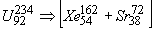
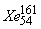
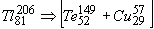
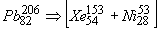
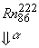

|
В. И. ЕЛИСЕЕВ ВВЕДЕНИЕ В МЕТОДЫ ТЕОРИИ
ФУНКЦИЙ ПРОСТРАНСТВЕННОГО КОМПЛЕКСНОГО ПЕРЕМЕННОГО |
|
Продолжение 2 из 2. 6.5. Обобщение результатов альфа распада. Расчет радиоактивных рядов.
Расчет показал, что для каждого ядра периодической таблицы элементов и их изотопов возникают свои уровни возбуждения моды, которые могут реализоваться через каналы  и a-распад. При этом установлено, что изменение структуры моды при переходе заряда или нейтрона из одного блока в другой вызывает резкое изменение уровня возбуждения ядра.
и a-распад. При этом установлено, что изменение структуры моды при переходе заряда или нейтрона из одного блока в другой вызывает резкое изменение уровня возбуждения ядра.
Доказано расчетом, что система из А –взаимодействующих частиц, конкретно Z-протонов и N-нейтронов подчиняется законам структурирования пространства.
Законы структурирования пространства отвечают алгебре с классическими законами операций.
В свою очередь пространство, построенное на базе алгебры с классическими законами операций соответствует преобразованиям Лоренца.
Преобразования Лоренца рассмотрены с иных позиций, чем это делает теоретическая физика. Интервал рассматривается как оператор для оценки энергетического состояния структуры материи. Пространственные дифференциалы заменены на массы частиц структуры, временной дифференциал заменен массой полевого кванта (обменного кванта). В результате имеем следующую формулу
Энергия связи А-частиц тогда выражается в виде
Расчет по этим формулам не на словах а результатами показали единство пространства и материи. Однако коэффициент перехода структуры пространства –времени в материю остается до настоящего времени неизвестным.
Энергия частиц. энергия взаимодействия частиц, квантованность энергий адекватно отражает структуру пространства. Расчет показал, что каждый уровень структуры имеет свой интервал изменения величины энергии. Перестройка структуры вызывается отклонением от этого интервала. Эти положения согласуются со структурой ядер и электронных оболочек ядер периодической системы элементов. Образование элементов –лантаноидов вызвано формированием новой структуры. Мезонные заряды первой половины периодической таблицы сформировали предельно насыщенный мезонным полем блок. Поэтому тяжелые ядра состоят из двух блоков. Тяжелые ядра представляют систему из двух блоков, с непрерывно изменяющимся соотношением нейтронов и протонов. Причем изменение на единицу в заряде или в количестве нейтронов вызывает резко изменение возбужденного состояния ядер. Радиоактивные распады могут происходить как внутри моды так и вызывать распад ядра. Причем энергия возбужденного состояния дочернего ядра может в начальный момент оказаться выше энергии возбуждения материнского ядра. Возбуждение снимается как внутренним так и внешним радиоактивным распадом. Непрерывные процессы внутреннего и внешних распадов характеризует радиоактивные ряды.
Приводим результаты расчета радиоактивного ряда Уран-радиевой серии, начиная с распада ядра
. энергия возбуждения моды равна 10,754 Мэв, при
 этой энергии происходит перестройка моды. Каналы -распадов закрыты.
этой энергии происходит перестройка моды. Каналы -распадов закрыты.
энергия возбуждения моды равна 25,764 Мэв.
Переход одного нейтрона из блока с избытков
нейтронов в блок с их недостатком резко изменяет
энергию возбуждения моды, что приводит к альфа-
распаду. Канал распадов закрыты.
A - Распад идет через ядро стронция
 с образованием ядра криптона. При этом дефицит
с образованием ядра криптона. При этом дефицит
в нейтронах ядра этого блока сокращается.
. В свободном состоянии реакция
запрещена и не происходит.
энергия возбуждения моды равна 18,085 Мэв, при
которой происходит a-распад также через ядро
второго блока по реакции , которая
в свободном состоянии также запрещена. Альфа
распад через ядро первого блока  не
происходит, так как приводит к отрицательной
энергии мод в обеих случаях.
Энергия возбуждения моды равна 10,637 Мэв При этой энергии срабатывают только
внутренние каналы распада в объеме моды.
Происходит две реакции излучения и захвата
Электрона по схемам:
, .
ОБРАЗУЕТСЯ НОВАЯ МОДА ДЛЯ ЯДРА
 с энергией возбуждения 39,026 Мэв. Проявляется
с энергией возбуждения 39,026 Мэв. Проявляется
квантовый характер энергии ядер –изменение
зарядов блоков ядер всего на одну единицу
приводит к резкому изменению величины энергии
возбуждения моды. A - Распад происходит через
ядро второго блока, так как распад через ядро
первого блока приводит к отрицательной энергии
возбуждения ядра. .
с энергией возбуждения 31,379 Мэв. Для этой
энергии моды открыты два канала распада альфа и
ветта. Рассмотрим канал распада через ядро  получим новое ядро с новой модой
получим новое ядро с новой модой
с энергией возбуждения 23,917 Мэв., которая
вызывает  -распад ядра полония через ядро
-распад ядра полония через ядро
второго блока. Все другие варианты распада при-
водят к отрицательным энергиям системы блоков.
с энергией возбуждения 16,633 Мэв. Каналы альфа
распада закрыты, открыт канал  -электронного
-электронного
распада через ядро второго блока
с энергией возбуждения 1,749 Мэв. Для этой моды
и ядра висмута все каналы распада в том числе и
внутренней перестройки моды закрыты. Расчет
дает только возможность  -распада через ядро
-распада через ядро
первого блока
c энергией возбуждения 15,246 Мэв, для которой
может происходить только внутренний альфа
распад ядра второго блока с захватом альфа части-
ядром первого блока. Происходит перестройка
 моды через две реакции, которые в свободном
моды через две реакции, которые в свободном
состоянии для этих ядер запрещены и не про-
исходят.
Эти реакции приводят к новой моде ядра
полония.
c энергией возбуждения 18,445 Мэв. Происходит
перестройка моды, так как срабатывают только
 внутренние каналы распада –блоки ядер
внутренние каналы распада –блоки ядер
обмениваются электроном.
с энергией возбуждения 30,139 Мэв. Срабатывает
канал двойного a-распада.
с энергией возбуждения 33,39 Мэв. Происходит
последовательная перестройка моды за счет a-рас-
пада первого блока.
с энергией 30,482 Мэв
с энергией 26,009Мэв
с энергией 19,921 Мэв. Срабатывает канал a-
распада через ядро второго блока
с энергией возбуждения 13,101 Мэв. Для этой
моды срабатывает канал  -распада. Остальные
-распада. Остальные
каналы распада не работают.
 энергия возбуждения этого ядра при такой моде
 равна 29,371Мэв.
равна 29,371Мэв. -Электронный распад через
-Электронный распад через
ядро второго блока приводит к устойчивому ядру
с энергией возбуждения 13,601 Мэв. Внешние кана-
лы распада не работают. Ядро устойчиво.
Внутренний радиоактивный распад приводит
последовательно к следующим модам
с энергией 40,956 Мэв большей чем 13,601Мэв.
 с отрицательной энергией равной –20,57 Мэв.
с отрицательной энергией равной –20,57 Мэв.
с энергией моды 18,2Мэв>13,6Мэв
с энергией моды равной 7,379Мэв<13,6 Мэв. При
этой энергии закрыты каналы внутренней перестройки блоков и внешних распадов. Таким образом радиоактивный ряд закончился на устойчивом ядре свинца
Экспериментальная цепочка распада отличается от расчетной с момента распада ядра свинца
более вероятна, чем экспериментальная
.
Таким образом, рассчитанная корректировка уранорадиевой цепочки имеет вид.

Мини оглавление:
[0], [1.1.1, 1.1.2, 1.1.3, 1.1.4, 1.1.5, 1.1.6, 1.1.7, 1.1.8, 1.2, 1.2.1, 1.2.2, 1.2.2.a, 1.2.2.b, 1.2.2.c, 1.2.2.d, 1.2.2.e, 1.2.2.f, 1.2.2.g, 1.2.2.h, 1.2.3, 1.3.1, 1.3.2, 1.3.3, 1.3.4, 1.3.5, 1.3.6, 1.4.1, 1.4.2, 1.5, 1.6, 1.7.1, 1.7.2, 1.7.3.1, 1.7.3.2, 1.7.3.3, 1.7.4.1, 1.7.4.2, 1.8.1], [2.1, 2.2],[3.1, 3.2, 3.3, 3.4.1, 3.4.2, 3.4.3, 3.4.4, 3.4.5],[4.1, 4.2, 4.3, 4.4],[5.1, 5.1.Рис.52, 5.2, 5.3, 5.4, 5.4.Т1, 5.4.Т2, 5.4.Т3, 5.5.1, 5.5.2, 5.5.3, 5.5.4],[6.1.1, 6.1.2, 6.2.1, 6.2.2, 6.2.3, 6.2.4, 6.2.5, 6.3, 6.4.1, 6.4.2, 6.5.1, 6.5.2],[7.1, 7.2, 7.3, 7.4, 7.5, 7.6, 7.7.1, 7.7.2, 7.8.1, 7.8.2, 7.8.3, 7.9],[8.1, 8.2.1, 8.2.2, 8.3, 8.4, 8.5, 8.6, 8.6.T1, 8.7, 8.8.1, 8.8.2, 8.8.3, 8.9.1, 8.9.2, 8.9.3, 8.10, 8.10.T2, 8.10.T3],[9.1, 9.2, 9.3, Рис.88, 89, 90, 91, 92, 93, 94, 95, 96, 97, 98, 99, 100],[10.1, 10.2, 10.3, 10.4, 10.5, 10.6, 10.7, 10.8, 10.9, 10.10, 10.11, 10.12, 10.13, 10.14, 10.15.1, 10.15.2, 10.16.1, 10.16.2, 10.17, 10.18],[11]
Размещенный материал является электронной версией книги: © В.И.Елисеев, "Введение в методы теории функций пространственного комплексного переменного", изданной Центром научно-технического творчества молодежи Алгоритм. - М.:, НИАТ. - 1990. Шифр Д7-90/83308. в каталоге Государственной публичной научно-технической библиотеки. Сайт действует с 10 августа 1998.
E-mail: mathsru@gmail.com